Learning Agriculture Through Experience
Connecting agricultural knowledge with farmers, rural institutions and village communities.
Explore RAWE ProgrammeAbout RAWE
Rural Agricultural Work Experience Programme
The Rural Agricultural Work Experience (RAWE) Programme provides agricultural students with practical exposure to farming systems, rural institutions, agricultural technologies and village development activities.
Through AEX 401, students interact with farmers, observe agricultural practices, participate in field activities and understand the functioning of rural institutions.
This website presents the field activities, demonstrations, institutional visits, training programmes and rural development experiences conducted at Keeramangalam.
Keeramangalam Village Profile
Agricultural and rural environment
Keeramangalam
Keeramangalam is located in Pudukkottai district, Tamil Nadu. Agriculture is an important activity in the surrounding rural areas.
Major Agricultural Activities
- Coconut cultivation
- Paddy cultivation
- Flower cultivation
- Black gram cultivation
- Vegetable cultivation
Village Study Activities
- Participatory Rural Appraisal (PRA)
- Social mapping
- Resource mapping
- Village timeline preparation
- Seasonal calendar preparation
- Problem tree analysis
RAWE Field Activities
Practical learning and village-level agricultural exposure
Farmer Interaction
Interaction with farmers to understand cropping patterns, cultivation practices and field-level problems.
PRA Activities
Resource mapping, social mapping, timeline, seasonal calendar and problem tree analysis.
📸 Click here to view PRA photographs →
Coconut Cultivation
Observation of coconut cultivation, crop management and pest and disease problems.
Flower Cultivation
Observation of flower crops and their cultivation and management practices.
Crop Management
Understanding crop production practices and farmers' field-level challenges.
Community Participation
Participation in village awareness and agricultural extension activities.
PRA Activities – Photo Gallery
Participatory Rural Appraisal – Keeramangalam
14 Field Photographs
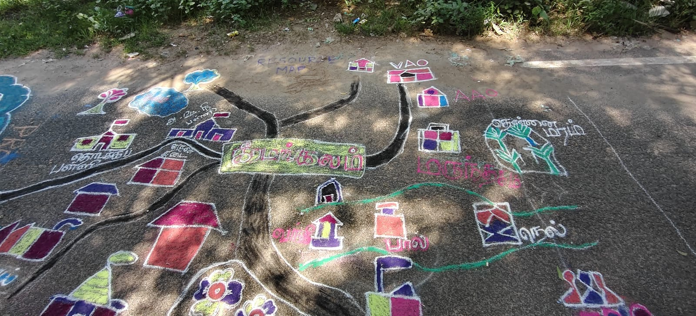
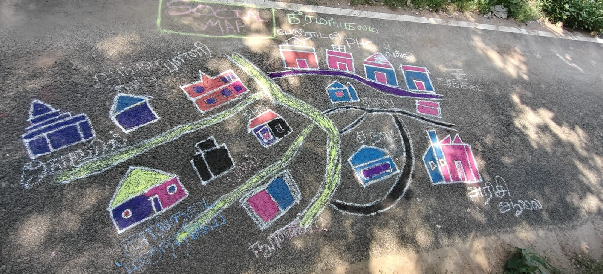
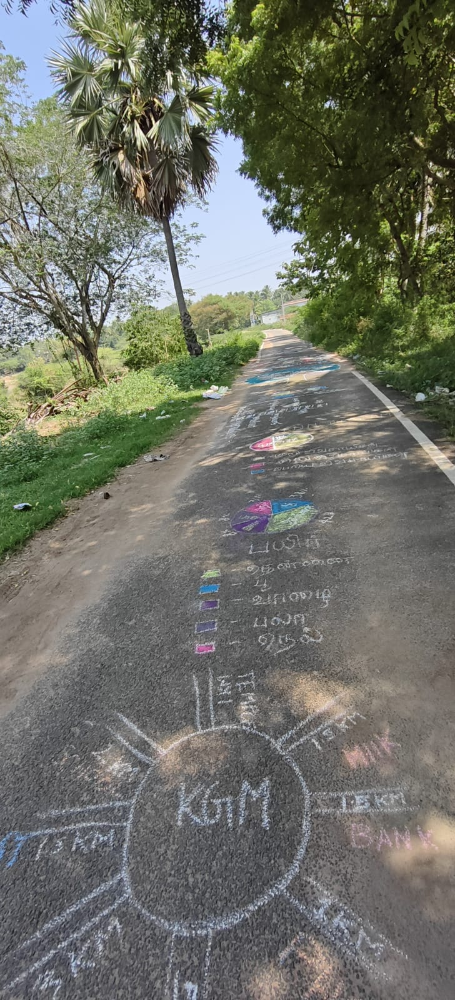
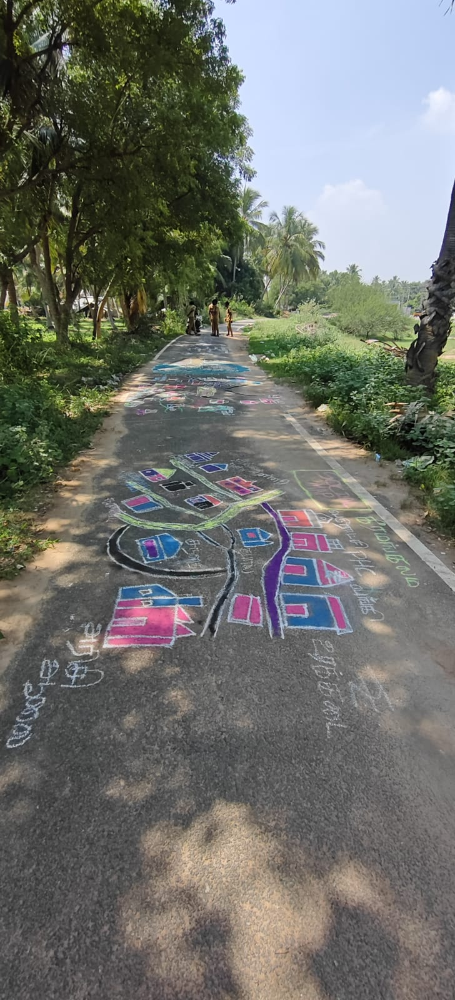
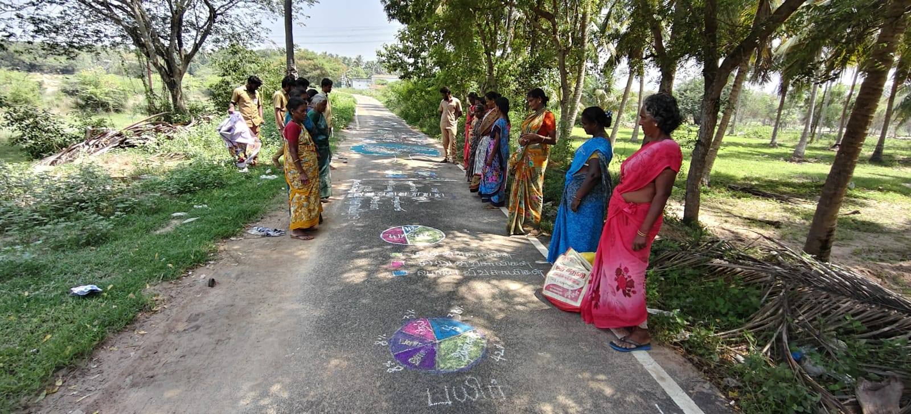
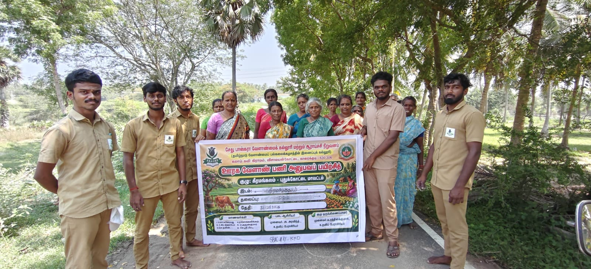
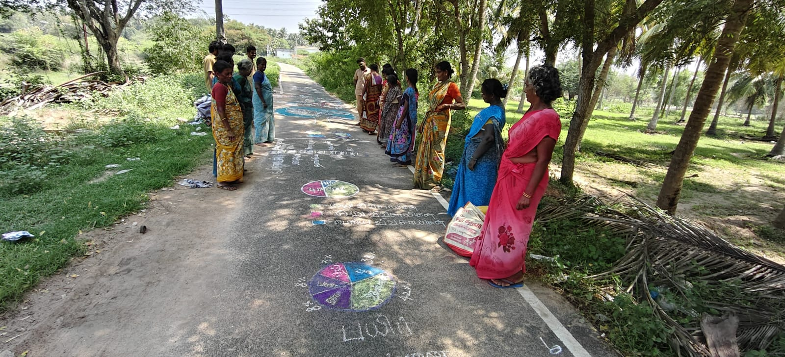
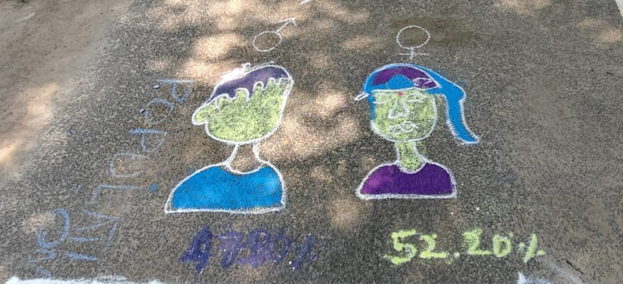
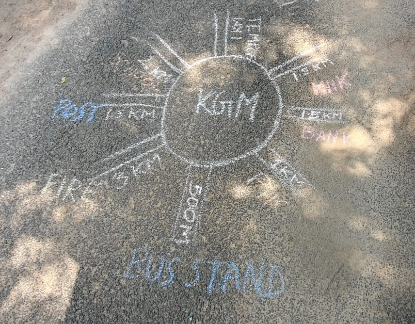
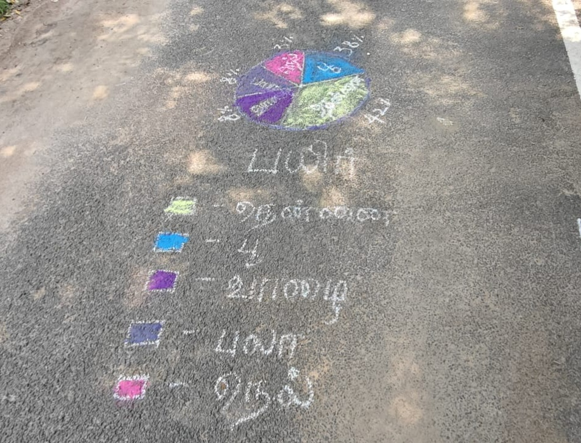
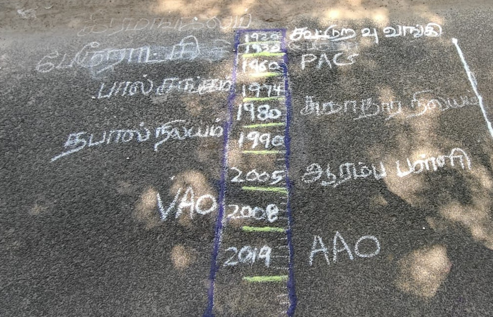
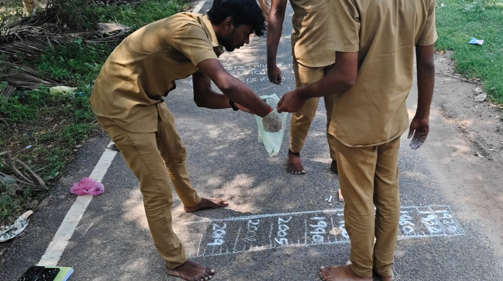
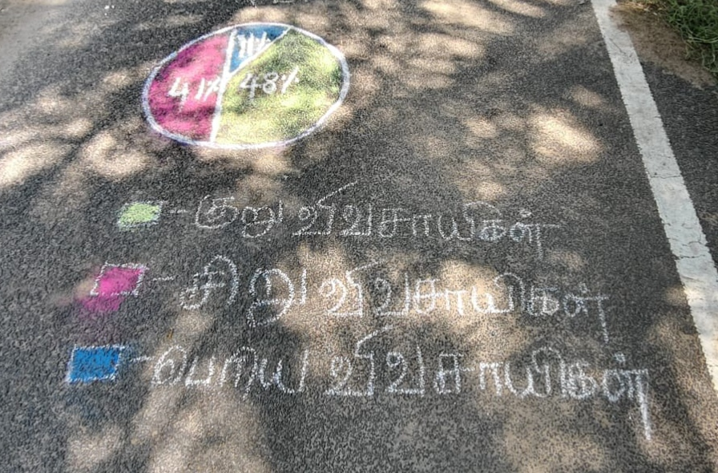
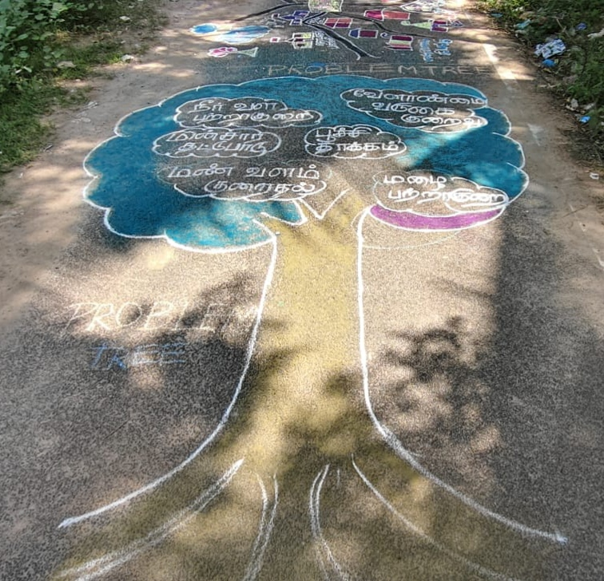
Institutional and Industrial Attachments
Exposure to agricultural institutions and rural enterprises
Agro-Industries Attachment
Exposure to agro-based industries, processing activities and agricultural value addition.
NGO Attachment – SELVA TRUST
Exposure to agricultural support, women's empowerment, training programmes, awareness activities, organic input preparation and rural development.
FPO Attachment
Understanding Farmer Producer Organisation activities, farmer participation and collective marketing.
Agriculture Department
Exposure to the functions of ADA, AO, AAO and VAO, agricultural schemes and extension services.
Cooperative Institutions
Understanding cooperative banking, agricultural credit and farmer support services.
Agricultural Marketing
Exposure to Uzhavar Sandhai, agricultural marketing and farmer-to-consumer sales.
Soil Testing Laboratory
Learning soil sample collection, soil analysis and soil health management.
Custom Hiring Centre
Understanding agricultural machinery services and equipment availability for farmers.
Dairy and Milk Cooperative
Exposure to milk collection, quality assessment, processing and cooperative management.
Agro-Based Enterprises
Visits to rice mills, oil mills, sugar mill and other agricultural enterprises.
Renewable Energy
Exposure to solar energy applications and renewable energy in agriculture.
Rural Institutions
Understanding rural public services, health facilities and local administration.
Institutional Visits
Learning from research, training and public institutions
KVK – Vamban
Exposure to agricultural technologies, farmer training, demonstrations and extension activities.
Agricultural Research Institutions
Understanding agricultural research, crop improvement and technology development.
Primary Health Centre
Learning about rural healthcare services, health awareness and community welfare.
Town Panchayat
Understanding local administration, public services and village development activities.
Agricultural Training Centres
Exposure to farmer training, demonstrations and agricultural knowledge transfer.
Training and Extension Activities
Knowledge sharing and practical skill development
Organic Input Preparation
Practical exposure to traditional and organic agricultural input preparation.
Fish Amino Acid
Preparation, fermentation and agricultural use of fish amino acid.
Kunapajalam Preparation
Training on preparation using locally available materials.
Mushroom Cultivation
Practical exposure to oyster mushroom cultivation and its benefits.
Kitchen Garden
Awareness about household vegetable production and nutritional security.
School Awareness Programme
Activities related to health, hygiene, nutrition and environmental awareness.
Agricultural Demonstrations
Practical demonstrations of agricultural technologies
Air Layering in Jasmine
Demonstration of vegetative propagation through air layering in jasmine.
Boron Efficiency in Coconut
Demonstration using Calotropis to improve boron-use efficiency in coconut.
Maida Solution
Preparation and demonstration of maida solution for agricultural use.
Egg Amino Acid
Preparation and application awareness of egg amino acid solution.
Herbal Garden
Identification and observation of medicinal and herbal plants.
Soil Health Awareness
Soil health management and agricultural awareness activities.
Participatory Rural Appraisal (PRA)
Keeramangalam Village – PRA Field Activities
PRA Activities
Participatory Rural Appraisal activities were conducted to understand village resources, social infrastructure, agricultural conditions and community needs.
RAWE Reports
Field observations and academic documentation
Village Profile Report
Village resources, agricultural activities and rural infrastructure.
Farmer Visit Reports
Individual farmer details, crops, cultivation practices and field problems.
Institutional Visit Reports
Observations from agricultural and rural institutions.
Demonstration Reports
Details of agricultural demonstrations and practical learning.
RAWE Photo Gallery
Memorable moments from field activities
This gallery presents photographs of farmer interactions, agricultural activities, training programmes, demonstrations and institutional visits.
View PRA Photographs
🌿 Automatic Photo Galleries
PRA Photographs
General Gallery
Agricultural Demonstrations
Farmers Visits
Institutional Visits
Downloads and Attachments
RAWE academic materials and documents
RAWE Report
Academic fieldwork documentation.
Photo Documentation
Photographic records of RAWE activities.
Programme Information
KEERAMANGALAM RAWE 2026
AEX 401 – Rural Agricultural Work Experience Programme (0+20)
Academic Year: 2026
Keeramangalam, Pudukkottai District, Tamil Nadu